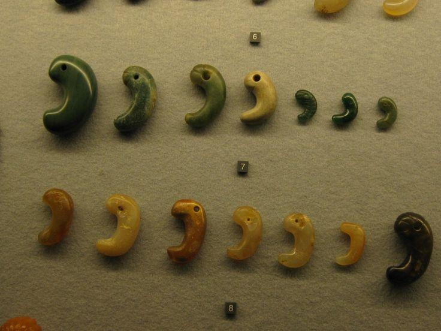
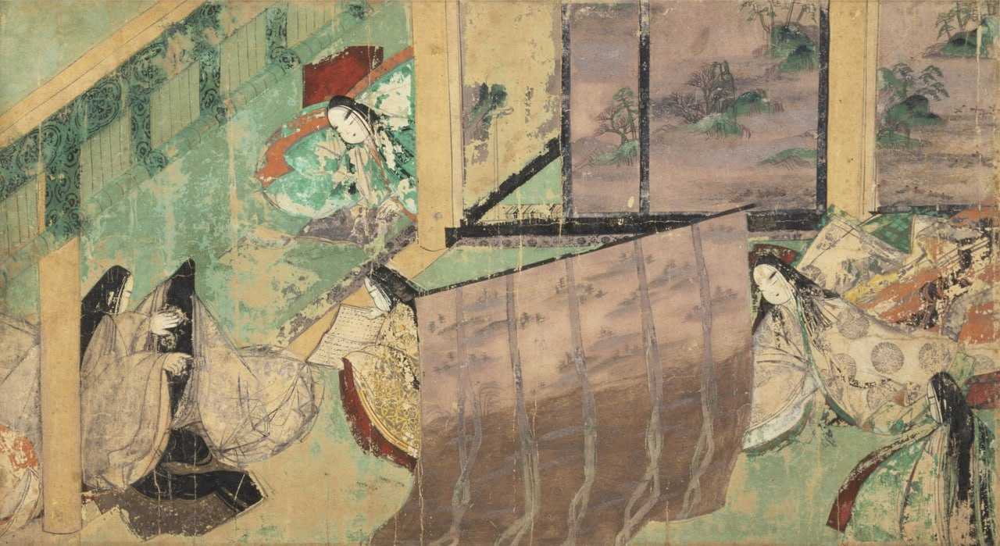
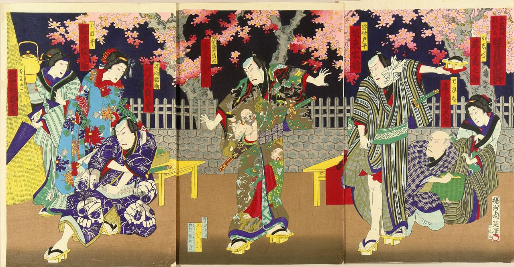
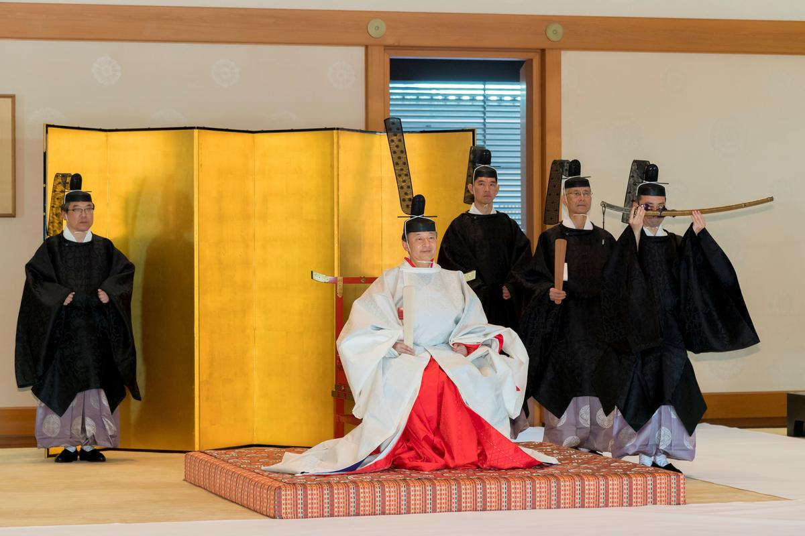

История Японии
Главная » Япония » История Японии
Эпохи Японии — вся история Японии кратко
31.03.2023 Рубрика: История Японии
Эпохи Японии
Исторический путь Японии охватывает продолжительный период, который начался 4000 лет
до н.э. Впервые о человеческих поселениях на Японских островах было упомянуто в китайской
династической летописи I века «Эршисы ши». Если верить археологическим раскопкам, первые
люди появились на архипелаге раньше официального начала истории японского народа, уже в
позднем палеолите. Исторические периоды в Японии уникальны контрастностью, несхожестью,
постоянными социально-культурными изменениями. Перечислим эпохи в Японии по порядку, а также
рассмотрим их внутреннее разделение на периоды
Ранняя эпоха
3.Период Кофун
Классическая эпоха
Средневековая эпоха
Современная эпоха
Ранняя эпоха
Про палеолитический период в Японии говорить не приходится, во-первых, потому что он мало изучен, во-вторых, потому что не существовало Японского архипелага, тогда острова еще были частью материка. Первая же установленная археологами примитивная человеческая цивилизация зародилась приблизительно 4000 лет до н.э., с этого периода и ведется хронология эпох Японии.
Период Дзёмон – 4000–300 лет до н.э.
Цивилизация Японии появилась в неолите.Данный период получил название Дзёмон.
Жители Японии занимались примитивным хозяйствованием: собирали съедобные растения, охотились, ловили рыбу. В тот период развивалось гончарное мастерство. Наиболее интересные артефакты – керамические фигурки «догу» и обереги на шею «матагама».

Рис.1 Догу
Рис.2 Матагама
Жители Японских островов периода Дзёмон внешне разительно отличались от современных японцев. Их внешность больше походила на европейскую. Потом на архипелаг с территории Кореи пришли переселенцы с азиатской внешностью. Они вытеснили исконное население. Именно их генетические признаки и языковые особенности стали основой формирования японской нации.
Период Яёй – с 300 года до н.э. до 250 года н.э.
Это был период, когда предки японцев резко перескочили с неолита в бронзовый, затем в
железный век. Более резких и кардинальных социально-культурных изменений не наблюдалось
больше ни в какие японские периоды. Японцы активно развивали сельское хозяйство, научились
изготавливать оружие и рабочие приспособления, выкапывать колодцы. Усовершенствовалось
гончарное ремесло, благодаря чему керамические изделия обрели более совершенные формы.
Главное аграрное событие периода Яёй – развитие разливного рисоводства. Благодаря
ему, люди начали проживать кучно, формируя сельские поселения
Появилась примитивная социально-иерархическая и политическая структура. Фактически
формируются зачатки государственности Японии. Первые города борются за торгово-военное
влияние. Существовавший в то время могучий клан Ямато породил императорскую династию,
правящую в Японии до сих пор.
В культурном плане период Яёй примечателен захоронениями курганного типа и изготовлением
оригинальных погребально-ритуальных предметов, таких как терракотовые статуэтки, бронзовые
колокола.
Рис.3 Бронзовый колокол Дотаку
Период Кофун – 250–538 годы н.э.
Это время активного распространения синтоизма – культа духов природы и предков. Япония этих эпох называлась Ямато по наименованию господствующего клана. Центром молодого государства была нынешняя префектура Нара. Население, жившее на отдаленных территориях архипелага, считалось диким, с ним постоянно велись войны. В конце концов, все территории удалось подчинить, сформировать единое государство, которое затем обрело название Нихон, то есть «Страна восходящего солнца».
Классическая эпоха
Следующая историческая эпоха в Японии уже считается событийной, ее даты определены уже более точно и достоверно.
Период Асука – 538–710 годы н.э.
Это время отметилось реформами Тайка, когда многое перенималось из Китая: письменность,
религия, система государственного устройства, юриспруденция. В Японии возникают чиновничьи
профессии. Сначала чиновниками могли стать люди любого социального уровня, получившие
образование и прошедшие соответствующий экзамен. Позже чиновниками назначали только
отпрысков аристократии.
В 604 году появилась Конституция, написанная принцем Сётоку.
Появилась первая письменность, причем писали японцы поначалу китайскими иероглифами. Второе
важнейшее заимствование из Китая – буддизм, ставший второй по распространенности религией,
внесший огромный вклад в культурное и архитектурное развитие Японии.
Период Нара – 710–784 годы н.э.
Эпохи в Японии зачастую именовались по названию столиц. В этот исторический период столицей
Японии стал город Нара. Формируется японский принцип построения и организации власти.
Архитектурную структуру столицы японцы переняли у китайцев. Столица застраивалась со строгой
ориентировкой по сторонам света: главные ворота – на юге, элитные районы – на востоке,
обычные – на западе, дома чиновников удаляются от императорского дворца по их рангу.
Японцы все еще использовали китайскую письменность. Было принято записывать буквально все: от
летописей и законодательных актов, до мифов и художественных произведений. Появился
поэтический жанр «манъёсю», когда иероглифы сочетали по их звучанию.
Пришедший к власти император Камму, у которого сложились не лучшие отношения с буддизмом,
решил перенести столицу из Нары, которая изобиловала буддийскими храмами, в Нагаоку. Но эта
столица просуществовала всего несколько лет, даже не была толком достроена. В итоге столицей
Японии стал город Хэйанкё, нынешний Киото.
Период Хэйан – 794–1185 годы н.э.
Периоды в Японии в очередной раз сменились после переноса столицы в Хэйанкё. Это было время более спокойных и деликатных политических игр, когда противников не уничтожали физически, как в прошлые века, а лишь отстраняли от должностей и сажали в темницы.
Император Камму и его потомки тяготели к единоличной власти, но постепенно аристократы начали перехватывать инициативу. В 1016 году аристократ Фудзивара Мичинага стал регентом, а фактически узурпировал в Японии власть. Породнившись с императорскими родственниками, Фудзивара обеспечил своему роду длительное нахождение на вершине японской государственной власти. В 1087-ом император Сиракава сложил полномочия. В 1159-ом власть к рукам прибирает клан Тайра. Но в 1180-ые лидирующую позицию в стране отвоевывает клан Минамото.
Главным культурным событием в эту эпоху было появление японской письменности. Японцы догадались, что удобнее, когда каждый иероглиф соответствует определенному звуку. До этого каждый звук мог записываться множеством разных иероглифов. Таким образом письменность существенно упростилась, появилось два типа шрифтов: катакана и хирагана. Эта оптимизация стала большим толчком к развитию японской литературы. Аристократия увлеченно сочиняла поэмы, стихи, романы, повести.
В архитектуре сформировался типичный для современного японского жилища минимализм. Буддизм стал меньше влиять на общественную жизнь Японии. В 1175 году возникла буддийская секта «Чистой земли».
Средневековая эпоха
Периодизация средневековой Японии наиболее сложная из-за множества исторически значимых событий. Средневековые эпохи в японской истории характеризуются приходом к власти воинского сословия, ставшего фактически независимым от императорского влияния.
Период Камакура – 1185–1333 годы н.э.
Император восседал в Киото, но реально владеющие властью сёгуны находились в Камакуре. С 1192 года руководил сёгунатом Минамото Ёримото. В 1221-ом в результате военного противостояния завершилось соперничество между Киото и Камакурой. Властвовать стала группа 16-ти регентов Ходзё в Камакуре. Но в 1333 году это правительство было ликвидировано. В 1232 году появился правовой кодекс «Госэйбай сикимоку».
Сформировавшаяся на материке Монгольская империя дважды – в 1274-ом и в 1281-ом – пыталась захватить Японские острова. Оба раза монголы были разгромлены японцами.
Буддизм перестал быть привилегией аристократов, стал распространяться среди военных и простонародья. Религия в Японии раскололась на несколько сект: «Дзёдо-сю», «Дзёдо-синсю», «Нитирэн-сю», а также особенно популярный у самураев дзен-буддизм.
Для скульптуры характерна реалистичность и заметное выражение эмоций. А в живописи стали популярны книжные иллюстрации «эмакимоно».
Рис.4 Иллюстрация "эмакимоно"
Реставрация Кемму – 1333–1336 годы н.э.
Этот короткий исторический отрезок Японии ознаменовался восстановлением императорской власти после упадка сёгуната. Против клана Ходзё выступил император Го-Дайго, но был повержен. Борьбу продолжил его наследник – принц Мориёси, поддерживаемый самураями. Императору Го-Дайго удалось сбежать из заточения, а его сторонники уничтожили сёгунат в Камакуре.
Самураи оказались недовольны реформами Го-Дайго. Один из приближенных самураев Асикага Такаудзи восстал против реформ, в 1336 году оккупировал Киото. А императору Го-Дайго пришлось бежать в Ёсино, где он организовал собственную столицу. Так в Японии сформировалось двоевластие.
Период Асикага – 1336–1573 годы н.э.
В 1338 году сформировалось правительство Муромати в Киото, но оно по-прежнему слабо держало власть в стране. Лишь в 1392-ом враждовавшие императорские дворы объединились. А вообще никакие периоды японской истории не были такими воинственными, как эпоха Асикага. Японию просто разрывали бесконечные гражданские и междоусобные войны. Так, с 1467-го по 1477 год шла Онинская война. В 1568-ом Киото захватил военачальник Ода Нобунага. А в 1573-ем правительство Муромати прекратило существование.
Несмотря на военные перипетии, в эпоху Асикага в Японии произошли существенные социальные, экономические и культурные преобразования. Было оптимизировано сельскохозяйственное производство, началось выращивание хлопчатника. Ремесленники стали объединяться в кооперативы «дза» с монополией на производство. Стала активнее торговля, в том числе и иностранная. А вместе с европейцами в Японию в 1540-ые начало проникать христианство. Крестьяне формировали сельские общины «со», управляемые местными самураями.
Культура формировалась на основе китайской эстетики и дзен-буддизма. Сначала сформировалась культура Китаяма, отличающаяся пышностью, величественностью и грандиозностью. На смену пришла культура Хигасияма, отличающаяся изяществом и простотой. Именно тогда возникли каменные сады, икебана, чайная церемония и поэзия «рэнга».
Период Адзути-Момояма – 1573–1603 годы н.э.
В Японии установилось военное правительство. В 1582 году после кончины Оды Нобунаги власть переходит к наследнику Тоётоми Хидэёси. Он проводит реформу, по которой право ношения оружия остается только за самураями. Хидэёси расправился с врагами и объединил страну в 1591 году после захвата замка Одавара. В следующем году правитель отправился захватывать Корею, но неудачно. После кончины Хидэёси началась борьба за власть, победу в которой в 1600 году одержал Токугава Иэясу.
Японская культура пропагандировала величие, власть, богатство. А еще стремилась ассимилироваться в европейскую культуру, перенимала у нее многое: от гардероба до научных знаний. Именно в эту эпоху появился знаменитый японский театр «кабуки»
Рис.5 Сцена театра Кабуки
Период Токугава – 1603–1868 годы н.э.
Эпоха Токугава считается самой мирной и спокойной в истории Японии. Токугава Иэясу в 1603 году стал сёгуном, учредил правительство в Эдо, это нынешний Токио. Однако официальной столицей оставался город Киото, а экономическим центром страны стала Осака.
Японское общество характеризовалось четким сословным делением на самураев, купцов, крестьян и ремесленников. Правило страной самурайское сословие. В 1639 году Япония практически изолировалась от мира, стала вести ограниченную международную торговлю, а христианство попало под запрет. Государственной идеологией стало неоконфуцианство, на основе которого сформировался самурайский кодекс «Бусидо».
Уровень образования в Японии эпохи Токугава был одним из высочайших в мире. Образование получали дети всех сословий.
Экономика Японии была частично натуральной, основанной на сельскохозяйственной продукции, что привело к увеличению аграрных земель. Активно развивалась промышленность и транспортная инфраструктура. Культура обретала массовый характер. Особенно популярным было театральное искусство. Самым ярким именем в литературе стал поэт Мацуо Басё, возвеличивший стихосложение «Хайку».
Современная эпоха
В 1868 году произошла Реставрация Мэйдзи, преобразовавшая систему императорского правления Японии и ликвидировавшая сёгунат. Так завершилась многовековая история самурайской власти и началась новая историческая эпоха. Рассмотрим все современные эпохи в Японии по годам.
Реставрация Мэйдзи – 1868–1912 годы н.э.
Начался новый период с гражданской войны между противниками и сторонниками сёгуната, а также с переноса столицы в Токио. Победили первые, а лишенные привилегий самураи еще долго поднимали бунты, самым значимым из которых было Сацумское восстание в 1877 году. В 1889-ом император Мэйдзи принял новую Конституцию.
Япония пошла по западному пути, переняла военную, политическую, юридическую систему. Благодаря такой реставрации, Японская империя стала индустриальным государством мирового уровня. Ее позиции укрепились после побед в нескольких войнах: в Китайско-японской в 1895-ом, в Русско-японской в 1905-ом. В 1910 году японцы аннексировали Тайвань, Корейский полуостров и южные берега Сахалина. Завершился славный исторический период кончиной императора.
Период Тайсё – 1912–1926 годы н.э.
Это был короткий исторический период, ознаменовавшийся переходом от олигархического правления к демократии. Япония участвовала в Первой мировой войне.
Период Сёва – 1926–1989 годы н.э.
Демократический период сменился временем милитаризма, выраженного национализма и проявлением империалистических идей. Выбрав экспансионистскую модель, Япония в 1931 году захватила Маньчжурию, сформировав там марионеточное правительство. В 1937-ом началась Вторая китайско-японская война. За год до этого Япония подписалась под нацистским Антикоминтерновским пактом.
В 1941-ом Япония вступила в Тихоокеанскую войну, напав на американскую базу Перл-Харбор, вынудив США активно действовать во Второй мировой. В 1942-ом, потерпев поражение в Коралловом море, Япония проиграла морскую войну. А после уничтожения Хиросимы и Нагасаки в 1945 году японцы вовсе вынуждены были сдаться, 2 сентября подписали Акт о капитуляции.
В 1946 году была принята обновленная Конституция. Через 6 лет в 1952-ом завершилась оккупация Японских островов. В 1956 году Япония приняла членство в ООН. А в 1972-ом нормализовала дипломатические отношения с Китаем.

Рис.6 Период Сёва
Период Хэйсэй – 1989–2019 годы н.э.
Название эпохи говорит за себя, оно переводится буквально как «достижение мира». В послевоенное время Япония поразительными темпами наращивала экономику. Но в 1991 году «пузырь лопнул», экономический взлет сменился падением. Нормализовать экономическую ситуацию Япония смогла лишь к 2000 году.
Период Рэйва – с 2019 года и до наших дней
Совсем недавно произошла смена исторических периодов, что было обусловлено добровольным отречением от престола престарелого императора Акихито. 1 мая 2019 года власть перенял наследник – Нарухито. Тогда и началась новая эпоха Японии – «Рэйва», название которой переводится как «красивая гармония».
Рис.7 Коронация 126-го императора Японии Нарухито — начало эпохи Рэйва
_